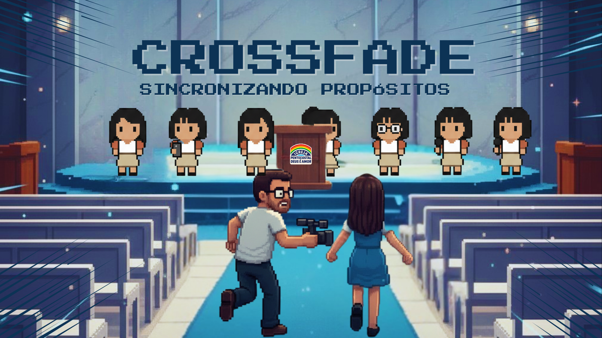
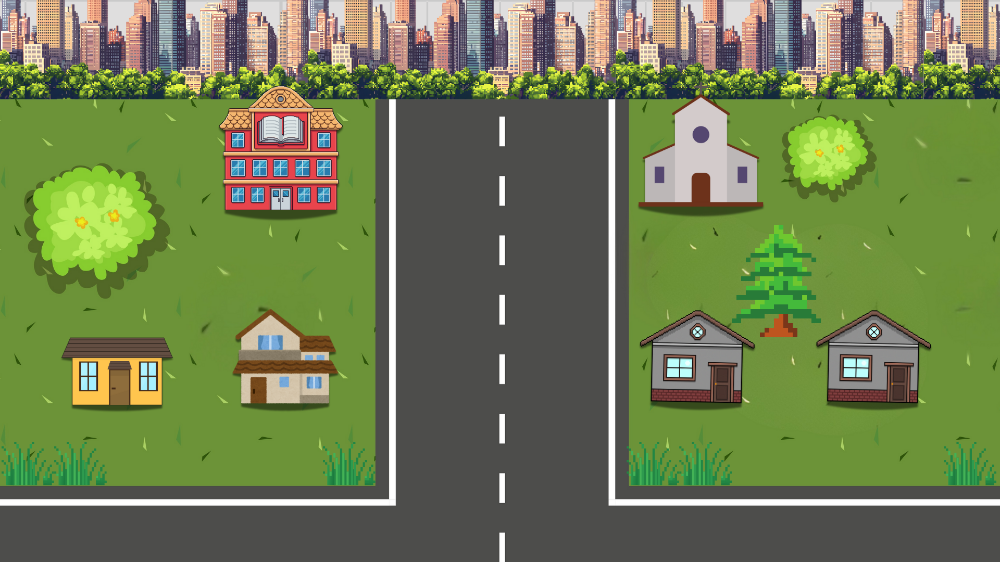
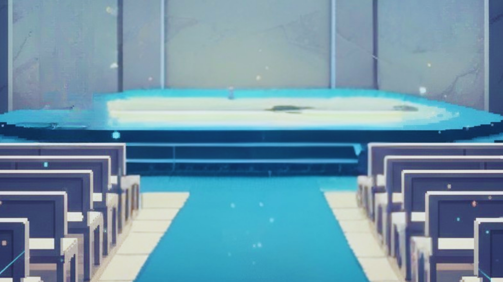
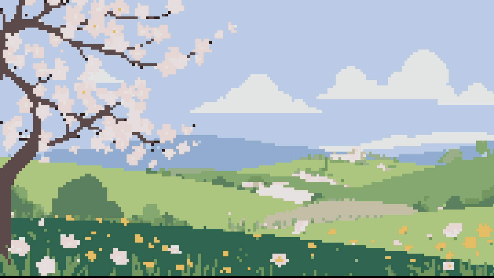

kaio, [30/01/2026 19:30]
CROSSFADE - Sincronizando Propósitos
GIRA O TELEMÓVEL
O jogo só roda com o ecrã deitado

CROSSFADE
TOQUE PARA INICIAR ❤️

Bom ver você, Primeira dama!
Vamos começar? [Toque aqui]

Ainda bem que você chegou...
tava te esperando. [Toque aqui]

Aceita ser minha dupla na mídia e na vida?
Quer namorar comigo?
kaio, [30/01/2026 19:30]